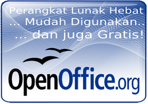

OpenOffice.org -
rumah dari aplikasi perkantoran open-source berskala dunia
Kenapa OpenOffice.org

 Dapatkan OpenOffice.org 3 sekarang
Dapatkan OpenOffice.org 3 sekarang
OpenOffice.org 3
adalah perangkat lunak perkantoran open-source untuk pengolah kata, spreadsheet, presentasi, grafis, basis data dan masih banyak lagi. Aplikasi ini tersedia dalam banyak bahasa
dan bekerja pada semua komputer. Aplikasi ini menyimpan data Anda pada format terbuka standar internasional dan juga mampu membaca/menulis berkas dari paket perkantoran lainnya. Aplikasi ini bisa didownload dan digunakan tanpa biaya untuk segala keperluan.
Perangkat Lunak Hebat
OpenOffice.org 3 adalah hasil dari pengembangan perangkat lunak selama lebih dari dua puluh tahun. Didesain dari awal sebagai sebuah kesatuan perangkat lunak, aplikasi ini memiliki konsistensi yang tidak dapat ditandingi oleh produk lain. Sebuah proses pengembangan yang terbuka berarti setiap orang dapat melaporkan kesalahan, meminta fitur baru, atau meningkatkan perangkat lunak tersebut. Hasilnya: OpenOffice.org 3 melakukan semua yang Anda inginkan pada perangkat lunak perkantoran Anda, sesuai dengan keinginan Anda.
Mudah Digunakan
OpenOffice.org 3 mudah untuk digunakan, dan jika Anda sudah pernah menggunakan paket perangkat lunak perkantoran lainnya, Anda akan dapat menggunakan OpenOffice.org 3 dengan mudah. Komunitas native-language kami berarti OpenOffice.org 3 mungkin sudah tersedia dan didukung pada bahasa Anda. Jika Anda sudah memiliki berkas dari paket perkantoran lainnya - OpenOffice.org 3 akan dapat membacanya tanpa ada masalah.
dan gratis
Yang terbaik, OpenOffice.org 3 dapat didownload dan digunakan tanpa ada biaya lisensi. OpenOffice.org 3 dirilis dibawah lisensi LGPL. Hal ini berarti Anda dapat menggunakannya untuk segala keperluan - domestik, komersial, pendidikan, administrasi publik. Anda dapat menginstallnya pada sebanyak komputer yang Anda inginkan. Anda bisa menyalinnya dan memberikannya pada keluarga, teman, murid, pegawai - semua orang yang Anda sukai.
Oracle dan Java adalah merek dagang dari Oracle dan/atau affiliasinya. Nama lainnya mungkin merek dagang dari pemilik masing-masing.